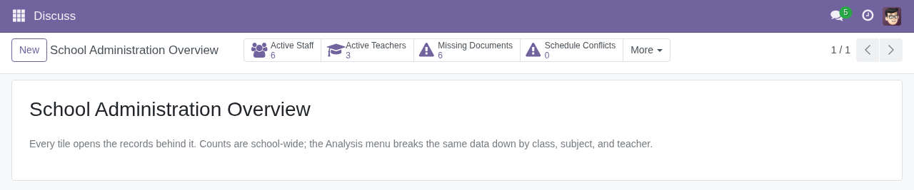
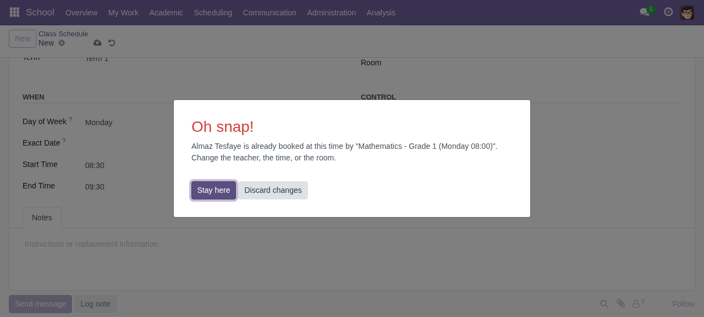
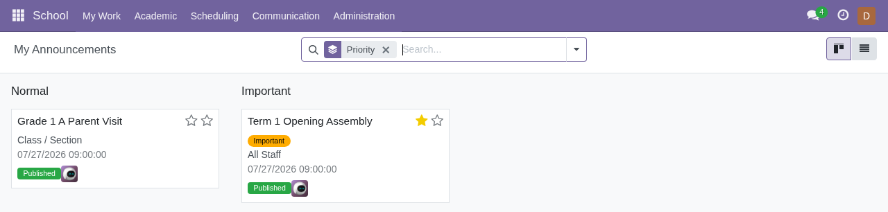
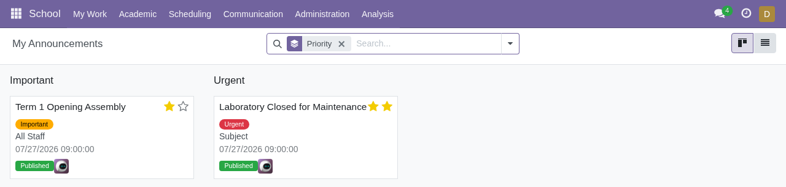
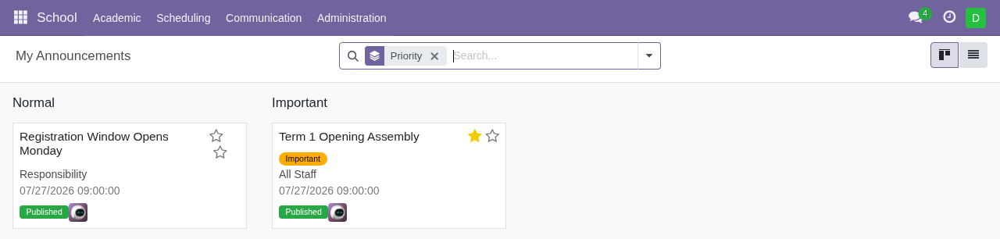

Sprint delivery, Thursday 30 July 2026
| Intern | Dawit Worku |
| Workstream | Integration and QA lead — Integration Team and Security & QA Team, brief §12 |
| Repository | async-arch/Async_school_system. |
| Branch at submission | main @ ff88530 |
| Test result | 40 tests executed, 0 failed, 0 errors of 34 test methods |
| Pull requests merged | #11, #14, #15, #16, #17 |
Section 12 of the brief assigns two workstreams to this role. The Integration Team owns attendance and mark-list teacher permissions, schedule links, relational consistency and regression testing. The Security and QA Team owns access groups, record rules, document privacy, conflict tests, cross-role tests, demo data, the bug log and final integration.
In practice the work was to act as the gate on the protected branch: audit every incoming
pull request against the brief, find and fix defects before they reached main,
and build the security layer that the other workstreams' acceptance criteria depend on.
Eighteen defects were logged across the sprint, sixteen of which are fixed.
The security layer specified in section 11 did not exist. The file
security/school_security.xml contained an empty <odoo/>
element — no access groups and no record rules — and all eighteen access-control rows were
bound to the generic base.group_user and base.group_system.
This mattered because roughly a third of the non-negotiable acceptance criteria in section 13 are statements about what a given role can and cannot see. None of them could be satisfied, and demonstration steps 11 through 15 in section 14 could not be performed at all.
Two further modules named in section 2 as part of the existing foundation were also found to be hollow rather than merely incomplete.
| Module | State found |
|---|---|
| Mark List | models/school_mark.py was a zero-byte file that was nonetheless imported by
the package. Its view file contained an empty <odoo/>. The model did
not exist. |
| Attendance | The model existed at 48 lines, but its view file was empty and no menu item pointed at it, so the module was unreachable through the interface. |
Severity is recorded as S1 where a defect blocks a stated acceptance criterion, S2 where it breaks a working flow, and S3 for hygiene and cosmetic issues.
| # | Sev | Defect | Found during | Status |
|---|---|---|---|---|
| 1 | S1 | No access groups or record rules; section 13 role isolation unsatisfiable | Pre-merge audit | Fixed |
| 2 | S1 | The school.mark model was absent entirely | Pre-merge audit | Fixed |
| 3 | S1 | Attendance had no views and no menu entry | Pre-merge audit | Fixed |
| 4 | S1 | Responsibility Assignment, a mandatory module, did not exist. Non-teaching staff could hold no responsibility, so responsibility-targeted announcements could never reach a Registrar or a Librarian | Brief re-audit | Fixed |
| 5 | S1 | school.teacher.name was an independent character field, so renaming the staff master record did not propagate — a direct failure of the section 13 criterion on master-record renames | Brief re-audit | Fixed |
| 6 | S1 | Pull request #11 introduced three models with no access-control rows at all; every non-administrator would have hit an access error | PR #11 review | Fixed before merge |
| 7 | S1 | Staff and teacher required documents had no fields on either model | Brief re-audit | Fixed |
| 8 | S2 | The staff_id NOT NULL migration fails on any database that already holds teacher rows; Odoo logs the failure and silently leaves the column nullable | Post-merge upgrade, PR #14 | Open |
| 9 | S2 | Demo data sat below the section 13 minimums, at three staff and two teachers against the required five and three | Acceptance-criteria check | Fixed |
| 10 | S2 | No student records existed in demo data, so attendance and marks could not be exercised at all and demonstration steps 13 and 15 dead-ended | Browser test preparation | Fixed |
| 11 | S2 | The administrator overview rendered every tile as zero against a database holding five active staff, caused by a blocked transient record and a compute with no field dependencies | Browser verification | Fixed |
| 12 | S2 | The test suite passed only against an empty database; nine of nine tests errored once real data existed because fixture values collided with seeded records | Post-seed test run | Fixed |
| 13 | S2 | The administrator password is not admin on databases created from the command line, so the documented login was wrong | Browser test pass | Fixed |
| 14 | S3 | Unsaved class schedules displayed False - False ( 00:00) in the breadcrumb | Browser verification | Fixed |
| 15 | S3 | Merge conflict in the manifest between pull request #11 and the main branch | PR #11 merge | Resolved |
| 16 | S3 | The manifest declared no licence key, producing an Odoo warning on every load | Install log review | Fixed |
| 17 | S3 | Two fields on school.staff shared the label "Responsibilities" | Upgrade log review | Fixed |
| 18 | S3 | Database credentials committed in a tracked configuration file, with the database manager left unprotected | Security review | Open |
Four decisions shaped the final implementation. Each is recorded here with its reasoning, because section 15 requires being able to explain the configuration shown.
required=TrueSection 4 requires a name, phone, department, job title, responsibility and employment
status on every staff record. Declaring these required=True adds a NOT NULL
constraint to a column that already holds rows, which is precisely the migration that failed
in defect 8. A Python constraint gating the move out of Draft gives the same guarantee without
a migration that can fail on an existing database.
Section 4 describes a control status of Draft, Active, Suspended, Inactive or Archived, and separately an employment status. Overwriting the existing selection would have silently reinterpreted data owned by the Staff Registration team. Two fields were kept, with two distinct meanings.
The Staff Registration and Teacher Registration teams' own model and view files were left untouched, so their in-flight pull requests would not conflict with the security work.
Odoo evaluates record-rule domains through safe_eval, which permits attribute
access but not method calls, and which has no datetime in scope. Both limits were
discovered during the first install attempt, which failed with
name 'datetime' is not defined. Each user's scope is therefore
precomputed onto fields on res.users so that every rule domain is a simple
attribute lookup.
One earlier assessment was withdrawn. Branch and campus targeting was
initially reported as not implementable, because nothing in the module modelled a campus. On
re-audit a small school.campus model made it straightforward, and all eight
audience types specified in section 8 now function.
| PR | Subject | Author | Action taken |
|---|---|---|---|
| #11 | Teacher, subject and assignment models | team | Manifest conflict resolved and the six missing access-control rows added before the merge was allowed |
| #14 | Teacher to staff link, workload validation | mekhlua | Reviewed and merged with continuous integration green. The post-merge upgrade surfaced defect 8, which was reported rather than concealed |
| #15 | Program and class scheduling | self | Merged after integration and browser verification |
| #16 | Security, marks, announcements, dashboards | self | Merged after a full test run and three-role browser verification |
| #17 | Demo students, attendance and marks | self | Merged |
| #9 | Mark list | Jennah198 | Held, not merged. The branch is in conflict and now overlaps the school.mark model delivered in #16. Flagged for rebasing rather than conflict resolution |
docker compose exec odoo odoo -c /etc/odoo/odoo.conf -d <db> -u school_management \
--test-enable --test-tags /school_management --no-http --stop-after-init
school_management: 40 tests 0 failed 0 error(s) of 34 testsThe suite comprises 461 lines across three files and 34 test methods. It was verified clean against three separate conditions: a fresh installation with demo data, a fresh installation without demo data, and an upgrade applied to an existing populated database.
| File | Tests | Coverage |
|---|---|---|
test_class_schedule.py | 9 | Section 7.3 conflict validation — teacher, class and room double-booking; back-to-back slots permitted; the same weekday in another term permitted; a cancelled slot releasing its room; an unassigned teacher rejected; a weekday or date required; an inactive teacher blocked from publication; a reason required when rescheduling |
test_security.py | 12 | Sections 9 and 13 isolation — a teacher sees attendance, marks and students only for assigned classes and subjects; announcements aimed at another class or subject are invisible; draft and expired announcements are invisible; staff documents raise an access error below Registrar; a plain staff user sees no other staff records |
test_responsibility.py | 13 | Sections 4, 5 and 6 — a staff rename propagating to the teacher and the assignment label; the Draft gate; suspended staff refused new assignments; deactivation disabling the linked login; one primary responsibility per person; no self-reporting; one homeroom teacher per class and term; responsibility and campus announcement targeting |


The three figures below show the same menu, My Announcements, opened by three different users against the same database. Nothing about the view changes; only the record rules differ.



Making staff_id required on a table that already held teacher rows fails.
Odoo logs the failure and continues, leaving the column nullable. Fresh installations receive
the constraint; upgraded ones do not, so on any existing database the link is enforced only by
the object layer. The fix is a pre-initialisation migration that backfills existing rows before
the constraint is applied. This belongs to the Teacher and Assignment workstream.
The tracked configuration file carries both the database manager password and the database user password, and the ignore file does not cover it. With the manager unprotected, anyone able to reach the service port can drop or duplicate any database. Section 18 forbids committing database credentials. The remedy is to move both values into the ignored environment file and ship an example configuration in place of the real one. It was not done during the sprint because it changes how the stack starts for every intern.
Section 6 asks for relational fields to these. Section remains a character field on the class record, academic year a character field, and term a two-value selection. Everything keys off the class record, so the links stay internally consistent, but there is no master table for either concept. This is a schema change touching every workstream and was deliberately not attempted mid-sprint.
Dated and recurring schedule slots are not cross-checked, so a one-off makeup class landing on a recurring weekday is not flagged; this is marked in the code with its upgrade path. There is also no approval workflow on attendance or marks, which remain direct entry.
Access-control rows no longer grant anything to the generic internal user group. Any existing user without a School Management role will see an empty application after upgrading. The Odoo administrator account is added to the School Administrator role automatically; every other account needs a role assigned. This will affect each intern's local database as soon as they pull the main branch, and the team should be told before the demonstration.